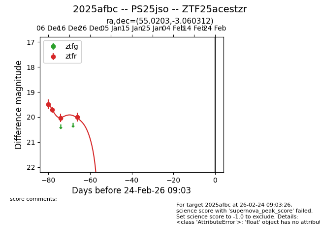
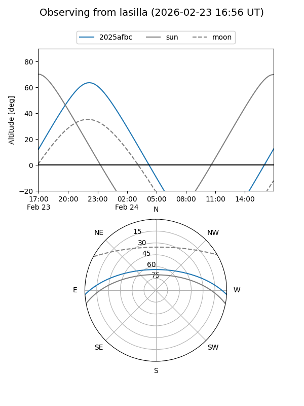
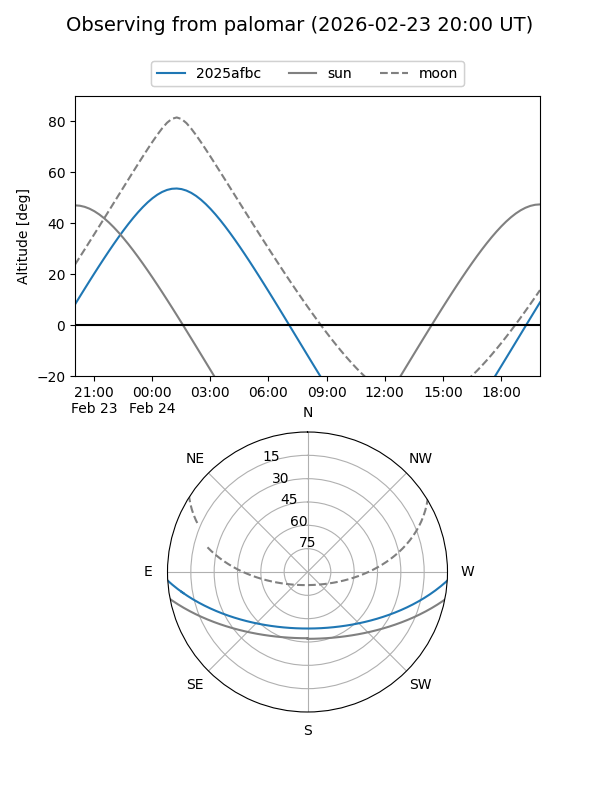
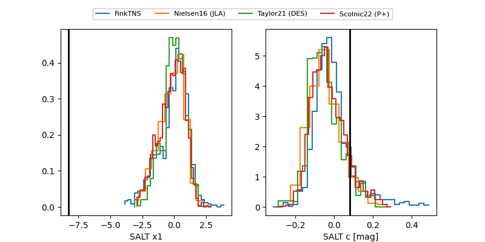

2025afbc
Target 2025afbc at 2025-12-29 13:24
Aliases and brokers:
FINK: fink-portal.org/ZTF25acestzr
Lasair: lasair-ztf.lsst.ac.uk/objects/ZTF25acestzr
ALeRCE: alerce.online/object/ZTF25acestzr
TNS: wis-tns.org/object/2025afbc
YSE: ziggy.ucolick.org/yse/transient_detail/2025afbc
alt names
ZTF25acestzr (ztf,fink_ztf)
2025afbc (tns,yse)
PS25jso (panstarrs)
Coordinates:
equatorial (ra, dec) = 55.0203,-3.06031
equatorial (HMS+DMS) = 03:40:04.87,-03:03:37.12
galactic (l, b) = (189.5346,-43.08784)
Flags:
Photometry:
last ztfr=20.00
4 ztfr detections
Lightcurve

Visibility


Additional plots
